CH 5.5 – Inverse Trigonometric Functions
As the title indicates, in this section we concern ourselves with finding inverses of the (circular) trigonometric functions. Our immediate problem is that, owing to their periodic nature, none of the six circular functions is one-to-one. To remedy this, we restrict the domains of the circular functions in the same way we restricted the domain of the quadratic function in Chapter 1 to obtain a one-to-one function. We first consider \(f(x) = \cos(x)\). Choosing the interval \([0,\pi]\) allows us to keep the range as \([-1,1]\) as well as the properties of being smooth and continuous.
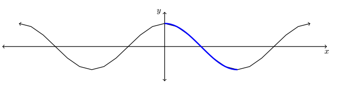
Recall from Chapter 1 that the inverse of a function \(f\) is typically denoted \(f^{-1}\). For this reason, some textbooks use the notation \(f^{-1}(x) = \cos^{-1}(x)\) for the inverse of \(f(x) = \cos(x)\). The obvious pitfall here is our convention of writing \((\cos(x))^2\) as \(\cos^{2}(x)\), \((\cos(x))^3\) as \(\cos^{3}(x)\), and so on. It is far too easy to confuse \(\cos^{-1}(x)\) with \(\frac{1}{\cos(x)} = \sec(x)\), so we will not use this notation in our text. Instead, we use the notation \(f^{-1}(x) = \arccos(x)\), read "arc-cosine of \(x\)".
To understand the "arc" in "arccosine", recall that an inverse function, by definition, reverses the process of the original function. The function \(f(t) = \cos(t)\) takes a real number input \(t\), associates it with the angle \(\theta = t\) radians, and returns the value \(\cos(\theta)\). Digging deeper, \(\cos(\theta) = \cos(t)\) is the \(x\)-coordinate of the terminal point on the Unit Circle of an oriented arc of length \(|t|\) whose initial point is \((1, 0)\). Hence, we may view the inputs to \(f(t) = \cos(t)\) as oriented arcs and the outputs as \(x\)-coordinates on the Unit Circle. The function \(f^{-1}\) then takes \(x\)-coordinates on the Unit Circle and returns oriented arcs — hence the "arc" in arccosine.
Below are the graphs of \(f(x) = \cos(x)\) restricted to \([0,\pi]\) and its inverse \(f^{-1}(x) = \arccos(x)\), obtained by reflecting across the line \(y = x\).
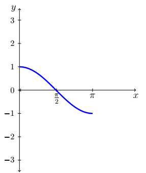
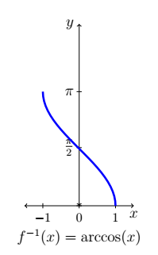
We restrict \(g(x) = \sin(x)\) in a similar manner, although the interval of choice is \(\left[-\dfrac{\pi}{2}, \dfrac{\pi}{2}\right]\).
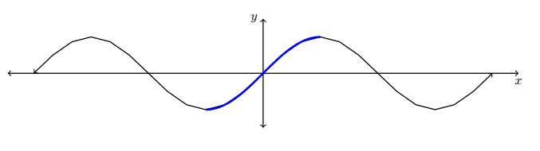
It should be no surprise that we call \(g^{-1}(x) = \arcsin(x)\), read "arc-sine of \(x\)".
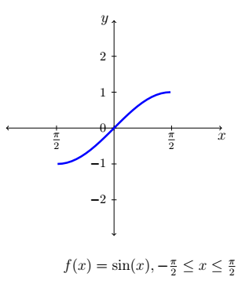
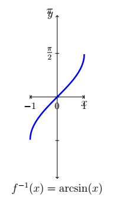
Properties of the Arccosine and Arcsine Functions
Properties of \(F(x) = \arccos(x)\)
- Domain: \([-1,1]\)
- Range: \([0,\pi]\)
- \(\arccos(x) = t\) if and only if \(0 \leq t \leq \pi\) and \(\cos(t) = x\)
- \(\cos(\arccos(x)) = x\) provided \(-1 \leq x \leq 1\)
- \(\arccos(\cos(x)) = x\) provided \(0 \leq x \leq \pi\)
Properties of \(G(x) = \arcsin(x)\)
- Domain: \([-1,1]\)
- Range: \(\left[-\dfrac{\pi}{2}, \dfrac{\pi}{2}\right]\)
- \(\arcsin(x) = t\) if and only if \(-\dfrac{\pi}{2} \leq t \leq \dfrac{\pi}{2}\) and \(\sin(t) = x\)
- \(\sin(\arcsin(x)) = x\) provided \(-1 \leq x \leq 1\)
- \(\arcsin(\sin(x)) = x\) provided \(-\dfrac{\pi}{2} \leq x \leq \dfrac{\pi}{2}\)
- Additionally, arcsine is odd
Everything above is a direct consequence of the facts that \(f(x) = \cos(x)\) for \(0 \leq x \leq \pi\) and \(F(x) = \arccos(x)\) are inverses of each other, as are \(g(x) = \sin(x)\) for \(-\dfrac{\pi}{2} \leq x \leq \dfrac{\pi}{2}\) and \(G(x) = \arcsin(x)\). It's about time for an example.
Example 1
-
Find the exact values of the following.
- \(\arccos\!\left(\dfrac{1}{2}\right)\)
- \(\arcsin\!\left(\dfrac{\sqrt{2}}{2}\right)\)
- \(\arccos\!\left(-\dfrac{\sqrt{2}}{2}\right)\)
- \(\arcsin\!\left(-\dfrac{1}{2}\right)\)
- \(\arccos\!\left(\cos\!\left(\dfrac{\pi}{6}\right)\right)\)
- \(\arccos\!\left(\cos\!\left(\dfrac{11\pi}{6}\right)\right)\)
- \(\cos\!\left(\arccos\!\left(-\dfrac{3}{5}\right)\right)\)
- \(\sin\!\left(\arccos\!\left(-\dfrac{3}{5}\right)\right)\)
-
Rewrite the following as algebraic expressions of \(x\) and state the domain on which the equivalence is valid.
- \(\tan\!\left(\arccos(x)\right)\)
- \(\cos\!\left(2\arcsin(x)\right)\)
Solution
1a. To find \(\arccos\!\left(\dfrac{1}{2}\right)\), we need the real number \(t\) with \(0 \leq t \leq \pi\) and \(\cos(t) = \dfrac{1}{2}\). We know \(t = \dfrac{\pi}{3}\) meets these criteria, so \(\arccos\!\left(\dfrac{1}{2}\right) = \dfrac{\pi}{3}\).
1b. The value of \(\arcsin\!\left(\dfrac{\sqrt{2}}{2}\right)\) is the real number \(t\) between \(-\dfrac{\pi}{2}\) and \(\dfrac{\pi}{2}\) with \(\sin(t) = \dfrac{\sqrt{2}}{2}\). The number we seek is \(t = \dfrac{\pi}{4}\). Hence, \(\arcsin\!\left(\dfrac{\sqrt{2}}{2}\right) = \dfrac{\pi}{4}\).
1c. The number \(t = \arccos\!\left(-\dfrac{\sqrt{2}}{2}\right)\) lies in \([0,\pi]\) with \(\cos(t) = -\dfrac{\sqrt{2}}{2}\). Our answer is \(\arccos\!\left(-\dfrac{\sqrt{2}}{2}\right) = \dfrac{3\pi}{4}\).
1d. To find \(\arcsin\!\left(-\dfrac{1}{2}\right)\), we seek the number \(t\) in \(\left[-\dfrac{\pi}{2}, \dfrac{\pi}{2}\right]\) with \(\sin(t) = -\dfrac{1}{2}\). The answer is \(t = -\dfrac{\pi}{6}\), so \(\arcsin\!\left(-\dfrac{1}{2}\right) = -\dfrac{\pi}{6}\).
1e. Since \(0 \leq \dfrac{\pi}{6} \leq \pi\), we could invoke the properties directly to get \(\arccos\!\left(\cos\!\left(\dfrac{\pi}{6}\right)\right) = \dfrac{\pi}{6}\). Working through using the definition: \(\arccos\!\left(\cos\!\left(\dfrac{\pi}{6}\right)\right) = \arccos\!\left(\dfrac{\sqrt{3}}{2}\right)\). Now \(\arccos\!\left(\dfrac{\sqrt{3}}{2}\right)\) is the real number \(t\) with \(0 \leq t \leq \pi\) and \(\cos(t) = \dfrac{\sqrt{3}}{2}\). We find \(t = \dfrac{\pi}{6}\), so \(\arccos\!\left(\cos\!\left(\dfrac{\pi}{6}\right)\right) = \dfrac{\pi}{6}\).
1f. Since \(\dfrac{11\pi}{6}\) does not fall between \(0\) and \(\pi\), the properties do not apply directly. Working from the inside out: \(\arccos\!\left(\cos\!\left(\dfrac{11\pi}{6}\right)\right) = \arccos\!\left(\dfrac{\sqrt{3}}{2}\right)\). From the previous part, \(\arccos\!\left(\dfrac{\sqrt{3}}{2}\right) = \dfrac{\pi}{6}\). Hence, \(\arccos\!\left(\cos\!\left(\dfrac{11\pi}{6}\right)\right) = \dfrac{\pi}{6}\).
1g. Since \(-\dfrac{3}{5}\) is between \(-1\) and \(1\), we can apply the properties directly: \(\cos\!\left(\arccos\!\left(-\dfrac{3}{5}\right)\right) = -\dfrac{3}{5}\). To understand why: let \(t = \arccos\!\left(-\dfrac{3}{5}\right)\). Then by definition \(\cos(t) = -\dfrac{3}{5}\), so \(\cos\!\left(\arccos\!\left(-\dfrac{3}{5}\right)\right) = \cos(t) = -\dfrac{3}{5}\).
1h. Let \(t = \arccos\!\left(-\dfrac{3}{5}\right)\) so that \(\cos(t) = -\dfrac{3}{5}\) for some \(t\) with \(0 \leq t \leq \pi\). Since \(\cos(t) < 0\), we have \(\dfrac{\pi}{2} < t < \pi\), so \(t\) corresponds to a Quadrant II angle. Using the Pythagorean Identity \(\cos^{2}(t) + \sin^{2}(t) = 1\): \[\left(-\frac{3}{5}\right)^2 + \sin^{2}(t) = 1 \implies \sin^2(t) = 1 - \frac{9}{25} = \frac{16}{25} \implies \sin(t) = \pm\frac{4}{5}\] Since \(t\) is a Quadrant II angle, \(\sin(t) > 0\), so \(\sin(t) = \dfrac{4}{5}\). Hence, \(\sin\!\left(\arccos\!\left(-\dfrac{3}{5}\right)\right) = \dfrac{4}{5}\).
2a. Let \(t = \arccos(x)\), so our goal is to express \(\tan\!\left(\arccos(x)\right) = \tan(t)\) in terms of \(x\). Since \(t = \arccos(x)\), we know \(\cos(t) = x\) where \(0 \leq t \leq \pi\). Since we need \(\tan(t)\), we must exclude \(t = \dfrac{\pi}{2}\). So either \(0 \leq t < \dfrac{\pi}{2}\) or \(\dfrac{\pi}{2} < t \leq \pi\), meaning \(t\) corresponds to a Quadrant I or Quadrant II angle.
Substituting \(\cos(t) = x\) into the Pythagorean Identity gives \(x^2 + \sin^{2}(t) = 1\), so \(\sin(t) = \pm\sqrt{1-x^2}\). Since \(t\) is in Quadrants I or II, \(\sin(t) \geq 0\), so \(\sin(t) = \sqrt{1-x^2}\). Thus: \[\tan(t) = \frac{\sin(t)}{\cos(t)} = \frac{\sqrt{1-x^2}}{x}\] Since we had to discard \(t = \dfrac{\pi}{2}\), we also discard \(x = \cos\!\left(\dfrac{\pi}{2}\right) = 0\). Hence \(\tan\!\left(\arccos(x)\right) = \dfrac{\sqrt{1-x^2}}{x}\) is valid for \(x \in [-1,0)\cup(0,1]\).
2b. Let \(t = \arcsin(x)\), so \(t\) lies in \(\left[-\dfrac{\pi}{2}, \dfrac{\pi}{2}\right]\) with \(\sin(t) = x\). We aim to express \(\cos\!\left(2\arcsin(x)\right) = \cos(2t)\) in terms of \(x\). Since \(\cos(2t)\) is defined everywhere, there are no additional restrictions on \(t\). Using the double angle identity \(\cos(2t) = 1 - 2\sin^{2}(t)\) and substituting \(\sin(t) = x\): \[\cos\!\left(2\arcsin(x)\right) = \cos(2t) = 1 - 2\sin^{2}(t) = 1 - 2x^2\] Since \(\arcsin(x)\) is defined only for \(-1 \leq x \leq 1\), the equivalence \(\cos\!\left(2\arcsin(x)\right) = 1-2x^2\) is valid on \([-1,1]\).
A few remarks about parts (e) and (f) above are in order. Most common errors with inverse circular functions arise from the domain restrictions needed to make the original functions one-to-one. The fact that \(\arccos\!\left(\cos\!\left(\dfrac{11\pi}{6}\right)\right) = \dfrac{\pi}{6}\) rather than \(\dfrac{11\pi}{6}\) is the exact same phenomenon seen in Chapter 1 where \(\sqrt{(-2)^2} = 2\), not \(-2\).
Additionally, even though \(1-2x^2\) is defined for all real numbers, the equivalence \(\cos\!\left(2\arcsin(x)\right) = 1-2x^2\) is valid only for \(-1 \leq x \leq 1\). This is analogous to the fact that while \(x\) is defined for all real numbers, the equivalence \(\left(\sqrt{x}\right)^2 = x\) is valid only for \(x \geq 0\). It pays to be careful when determining the intervals where such equivalences hold.
Arctangent and Arccotangent
The next pair of functions we wish to discuss are the inverses of tangent and cotangent, named arctangent and arccotangent, respectively. First, we restrict \(f(x) = \tan(x)\) to its fundamental cycle on \(\left(-\dfrac{\pi}{2}, \dfrac{\pi}{2}\right)\) to obtain \(f^{-1}(x) = \arctan(x)\). Note that the vertical asymptotes \(x = -\dfrac{\pi}{2}\) and \(x = \dfrac{\pi}{2}\) of \(f(x) = \tan(x)\) become the horizontal asymptotes \(y = -\dfrac{\pi}{2}\) and \(y = \dfrac{\pi}{2}\) of \(f^{-1}(x) = \arctan(x)\).
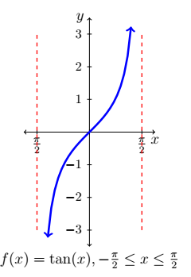
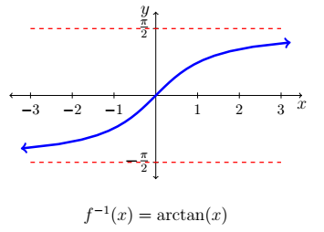
Next, we restrict \(g(x) = \cot(x)\) to its fundamental cycle on \((0,\pi)\) to obtain \(g^{-1}(x) = \text{arccot}(x)\). The vertical asymptotes \(x=0\) and \(x=\pi\) of \(g(x) = \cot(x)\) become the horizontal asymptotes \(y = 0\) and \(y = \pi\) of \(g^{-1}(x) = \text{arccot}(x)\).
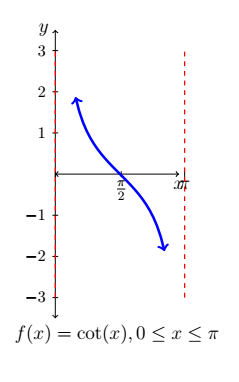
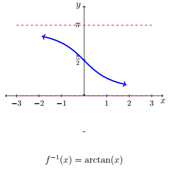
Properties of the Arctangent and Arccotangent Functions
Properties of \(F(x) = \arctan(x)\)
- Domain: \((-\infty, \infty)\)
- Range: \(\left(-\dfrac{\pi}{2}, \dfrac{\pi}{2}\right)\)
- As \(x \to -\infty\), \(\arctan(x) \to -\dfrac{\pi}{2}^{+}\); as \(x \to \infty\), \(\arctan(x) \to \dfrac{\pi}{2}^{-}\)
- \(\arctan(x) = t\) if and only if \(-\dfrac{\pi}{2} < t < \dfrac{\pi}{2}\) and \(\tan(t) = x\)
- \(\arctan(x) = \text{arccot}\!\left(\dfrac{1}{x}\right)\) for \(x > 0\)
- \(\tan\!\left(\arctan(x)\right) = x\) for all real numbers \(x\)
- \(\arctan(\tan(x)) = x\) provided \(-\dfrac{\pi}{2} < x < \dfrac{\pi}{2}\)
- Additionally, arctangent is odd
Properties of \(G(x) = \text{arccot}(x)\)
- Domain: \((-\infty, \infty)\)
- Range: \((0, \pi)\)
- As \(x \to -\infty\), \(\text{arccot}(x) \to \pi^{-}\); as \(x \to \infty\), \(\text{arccot}(x) \to 0^{+}\)
- \(\text{arccot}(x) = t\) if and only if \(0 < t < \pi\) and \(\cot(t) = x\)
- \(\text{arccot}(x) = \arctan\!\left(\dfrac{1}{x}\right)\) for \(x > 0\)
- \(\cot\!\left(\text{arccot}(x)\right) = x\) for all real numbers \(x\)
- \(\text{arccot}(\cot(x)) = x\) provided \(0 < x < \pi\)
Example 2
-
Find the exact values of the following.
- \(\arctan(\sqrt{3})\)
- \(\text{arccot}(-\sqrt{3})\)
- \(\cot(\text{arccot}(-5))\)
- \(\sin\!\left(\arctan\!\left(-\dfrac{3}{4}\right)\right)\)
-
Rewrite the following as algebraic expressions of \(x\) and state the domain on which the equivalence is valid.
- \(\tan(2\arctan(x))\)
- \(\cos(\text{arccot}(2x))\)
Solution
1a. We know \(\arctan(\sqrt{3})\) is the real number \(t\) between \(-\dfrac{\pi}{2}\) and \(\dfrac{\pi}{2}\) with \(\tan(t) = \sqrt{3}\). We find \(t = \dfrac{\pi}{3}\), so \(\arctan(\sqrt{3}) = \dfrac{\pi}{3}\).
1b. The real number \(t = \text{arccot}(-\sqrt{3})\) lies in \((0,\pi)\) with \(\cot(t) = -\sqrt{3}\). We get \(\text{arccot}(-\sqrt{3}) = \dfrac{5\pi}{6}\).
1c. We can apply the properties directly: \(\cot(\text{arccot}(-5)) = -5\). To see why: letting \(t = \text{arccot}(-5)\), we have \(t \in (0,\pi)\) and \(\cot(t) = -5\). Hence \(\cot(\text{arccot}(-5)) = \cot(t) = -5\).
1d. Let \(t = \arctan\!\left(-\dfrac{3}{4}\right)\). Then \(\tan(t) = -\dfrac{3}{4}\) for some \(-\dfrac{\pi}{2} < t < \dfrac{\pi}{2}\). Since \(\tan(t) < 0\), we know \(-\dfrac{\pi}{2} < t < 0\). Using the Pythagorean Identity \(1 + \cot^{2}(t) = \csc^{2}(t)\): from \(\tan(t) = -\dfrac{3}{4}\) we get \(\cot(t) = -\dfrac{4}{3}\). Substituting: \[1 + \left(-\frac{4}{3}\right)^2 = \csc^{2}(t) \implies \csc^2(t) = \frac{25}{9} \implies \csc(t) = \pm\frac{5}{3}\] Since \(-\dfrac{\pi}{2} < t < 0\), we choose \(\csc(t) = -\dfrac{5}{3}\), so \(\sin(t) = -\dfrac{3}{5}\). Hence \(\sin\!\left(\arctan\!\left(-\dfrac{3}{4}\right)\right) = -\dfrac{3}{5}\).
2a. Let \(t = \arctan(x)\), so \(-\dfrac{\pi}{2} < t < \dfrac{\pi}{2}\) and \(\tan(t) = x\). We want to express \(\tan(2\arctan(x)) = \tan(2t)\) in terms of \(x\). Note that \(\tan(2t)\) is undefined when \(2t = \dfrac{\pi}{2} + \pi k\), i.e., when \(t = \dfrac{\pi}{4} + \dfrac{\pi}{2}k\). The only values of this form in \(\left(-\dfrac{\pi}{2}, \dfrac{\pi}{2}\right)\) are \(t = \pm\dfrac{\pi}{4}\). Using the double angle identity: \[\tan(2\arctan(x)) = \tan(2t) = \frac{2\tan(t)}{1-\tan^{2}(t)} = \frac{2x}{1-x^2}\] Since \(t = \pm\dfrac{\pi}{4}\) corresponds to \(x = \tan\!\left(\pm\dfrac{\pi}{4}\right) = \pm 1\), we must exclude \(x = \pm 1\). Hence the equivalence holds for all \(x \in (-\infty,-1)\cup(-1,1)\cup(1,\infty)\).
2b. Let \(t = \text{arccot}(2x)\), so \(\cot(t) = 2x\) where \(0 < t < \pi\). We want to express \(\cos(\text{arccot}(2x)) = \cos(t)\) in terms of \(x\). Since \(\cos(t)\) is always defined, there are no additional restrictions. Using \(1 + \cot^{2}(t) = \csc^{2}(t)\) with \(\cot(t) = 2x\): \[1 + (2x)^2 = \csc^{2}(t) \implies \csc(t) = \pm\sqrt{4x^2+1}\] Since \(0 < t < \pi\), we have \(\csc(t) > 0\), so \(\csc(t) = \sqrt{4x^2+1}\) and \(\sin(t) = \dfrac{1}{\sqrt{4x^2+1}}\). Therefore: \[\cos(\text{arccot}(2x)) = \cos(t) = \cot(t)\sin(t) = \frac{2x}{\sqrt{4x^2+1}}\] Since \(\text{arccot}(2x)\) is defined for all real \(x\) and no additional restrictions arose, this equivalence holds for all real numbers \(x\).
Using a Calculator with Inverse Trigonometric Functions
We can extend these ideas into what we were doing in the Right Triangle Trigonometry section. Previously we used an angle and a side to find the other missing sides and missing angle. But what if we need to find an angle when given two sides and no angles other than the right angle? Let's first practice using the calculator to find inverse trigonometric values.
Example 3
-
Use a calculator to approximate the following values to four decimal places.
- \(\text{arccot}(2)\)
- \(\text{arcsec}(5)\)
- \(\text{arccot}(-2)\)
- \(\text{arccsc}\!\left(-\dfrac{3}{2}\right)\)
-
Find the domain and range of the following functions. Check your answers using a calculator.
- \(f(x) = \dfrac{\pi}{2} - \arccos\!\left(\dfrac{x}{5}\right)\)
- \(f(x) = 3\arctan(4x)\)
Solution
1a. Since \(2 > 0\), we can use the properties to rewrite \(\text{arccot}(2) = \arctan\!\left(\dfrac{1}{2}\right)\). In radian mode: \(\text{arccot}(2) = \arctan\!\left(\dfrac{1}{2}\right) \approx 0.4636\).
1b. Since \(5 \geq 1\), we use the properties to write \(\text{arcsec}(5) = \arccos\!\left(\dfrac{1}{5}\right) \approx 1.3694\).
1c. Since the argument \(-2\) is negative, we cannot directly apply the properties. Let \(t = \text{arccot}(-2)\), so \(0 < t < \pi\) and \(\cot(t) = -2\). Since \(\cot(t) < 0\), we know \(\dfrac{\pi}{2} < t < \pi\), so \(t\) corresponds to a Quadrant II angle.
Let \(\alpha\) be the reference angle for \(t\). Then \(0 < \alpha < \dfrac{\pi}{2}\) and \(\cot(\alpha) = 2\), so \(\alpha = \text{arccot}(2) = \arctan\!\left(\dfrac{1}{2}\right)\). Since \(t = \pi - \alpha\): \[t = \pi - \arctan\!\left(\frac{1}{2}\right) \approx 2.6779\] Hence \(\text{arccot}(-2) \approx 2.6779\).
1d. If the range of arccosecant is \(\left[-\dfrac{\pi}{2}, 0\right) \cup \left(0, \dfrac{\pi}{2}\right]\), we get \(\text{arccsc}\!\left(-\dfrac{3}{2}\right) = \arcsin\!\left(-\dfrac{2}{3}\right) \approx -0.7297\).
If the range is taken to be \(\left(0, \dfrac{\pi}{2}\right] \cup \left(\pi, \dfrac{3\pi}{2}\right]\), let \(t = \text{arccsc}\!\left(-\dfrac{3}{2}\right)\). Since \(\csc(t) < 0\), we have \(\pi < t \leq \dfrac{3\pi}{2}\), so \(t\) corresponds to a Quadrant III angle. Let \(\alpha\) be its reference angle; then \(\csc(\alpha) = \dfrac{3}{2}\), so \(\alpha = \arcsin\!\left(\dfrac{2}{3}\right)\). Then: \[t = \pi + \alpha = \pi + \arcsin\!\left(\frac{2}{3}\right) \approx 3.8713\] Hence \(\text{arccsc}\!\left(-\dfrac{3}{2}\right) \approx 3.8713\).
2a. The domain of \(F(x) = \arccos(x)\) is \([-1,1]\). For \(f(x) = \dfrac{\pi}{2} - \arccos\!\left(\dfrac{x}{5}\right)\), we set \(-1 \leq \dfrac{x}{5} \leq 1\), giving \(-5 \leq x \leq 5\). So the domain is \([-5,5]\).
Three key points on \(F(x) = \arccos(x)\) are \((-1,\pi)\), \(\left(0,\dfrac{\pi}{2}\right)\), and \((1,0)\). Tracking these through \(f\) gives \(\left(-5,-\dfrac{\pi}{2}\right)\), \((0,0)\), and \(\left(5,\dfrac{\pi}{2}\right)\). The range of \(f\) is \(\left[-\dfrac{\pi}{2},\dfrac{\pi}{2}\right]\).
2b. Since the domain of \(F(x) = \arctan(x)\) is all real numbers, and \(4x\) is defined for all real \(x\), the domain of \(f(x) = 3\arctan(4x)\) is all real numbers.
The graph of \(f\) differs from \(F(x) = \arctan(x)\) by a horizontal compression by a factor of \(4\) and a vertical stretch by a factor of \(3\). The vertical stretch affects the range: the horizontal asymptotes \(y = \pm\dfrac{\pi}{2}\) of \(\arctan(x)\) become \(y = \pm\dfrac{3\pi}{2}\), so the range of \(f\) is \(\left(-\dfrac{3\pi}{2}, \dfrac{3\pi}{2}\right)\).
Solving Triangles with Inverse Trigonometric Functions
Inverse trigonometric functions allow us to find missing angles in a right triangle when we are given two sides. Let's look at a few examples.
Example 4
Solve the triangles below by finding all missing sides and angles.
- \(\triangle ABC\) where \(a = 2\) in and \(b = 5\) in, with \(\angle C = 90^{\circ}\)
- \(\triangle ABC\) where \(c = 12\) cm and \(b = 4\) cm, with \(\angle C = 90^{\circ}\)
Solution
1. It is good practice to always draw the triangle and identify what we have and what we need.
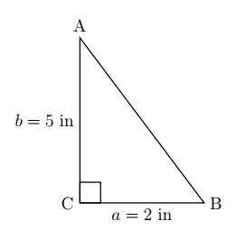
| Have | Need |
|---|---|
| \(\angle C = 90^{\circ}\) | \(c\) |
| \(b = 5\) in | \(\angle B\) |
| \(a = 2\) in | \(\angle A\) |
To find the missing side, apply the Pythagorean Theorem:
\[a^2 + b^2 = c^2 \implies 2^2 + 5^2 = c^2 \implies 4 + 25 = c^2 \implies c = \sqrt{29}\]To find \(\angle B\): side \(b\) is opposite and side \(a\) is adjacent to \(\angle B\), so we use tangent:
\[\tan(B) = \frac{5}{2} \implies \arctan(\tan(B)) = \arctan\!\left(\frac{5}{2}\right) \implies B \approx 68.2^{\circ}\]To find \(\angle A\): side \(a\) is opposite and side \(b\) is adjacent to \(\angle A\):
\[\tan(A) = \frac{2}{5} \implies \arctan(\tan(A)) = \arctan\!\left(\frac{2}{5}\right) \implies A \approx 21.8^{\circ}\]Summary:
| Have | Found |
|---|---|
| \(\angle C = 90^{\circ}\) | \(c = \sqrt{29} \approx 5.39\) in |
| \(b = 5\) in | \(\angle B \approx 68.2^{\circ}\) |
| \(a = 2\) in | \(\angle A \approx 21.8^{\circ}\) |
2. Again, draw the triangle and identify what we have and need.
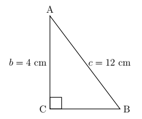
| Have | Need |
|---|---|
| \(\angle C = 90^{\circ}\) | \(a\) |
| \(b = 4\) cm | \(\angle B\) |
| \(c = 12\) cm | \(\angle A\) |
Find the missing side:
\[a^2 + b^2 = c^2 \implies a^2 + 16 = 144 \implies a^2 = 128 \implies a = 8\sqrt{2}\]To find \(\angle B\): side \(b\) is opposite and side \(c\) is the hypotenuse, so we use sine:
\[\sin(B) = \frac{4}{12} \implies \arcsin(\sin(B)) = \arcsin\!\left(\frac{4}{12}\right) \implies B \approx 19.47^{\circ}\]To find \(\angle A\): side \(b\) is adjacent and side \(c\) is the hypotenuse, so we use cosine:
\[\cos(A) = \frac{4}{12} \implies \arccos(\cos(A)) = \arccos\!\left(\frac{4}{12}\right) \implies A \approx 70.53^{\circ}\]Summary:
| Have | Found |
|---|---|
| \(\angle C = 90^{\circ}\) | \(a = 8\sqrt{2} \approx 11.3\) cm |
| \(b = 4\) cm | \(\angle B \approx 19.47^{\circ}\) |
| \(c = 12\) cm | \(\angle A \approx 70.53^{\circ}\) |
One may ask why we used trigonometry to find the second angle instead of simply subtracting from \(180^{\circ}\). While that approach is possible, we caution against it. It is almost always better to use the values you were originally given — since you know those are accurate — rather than values you derived, which may carry forward any errors you made. We are all human, and errors do occur.
Applications
All of the steps and processes outlined in this section and previous sections come in very handy in real-world applications. Below is an example of how this may be applied in a building trades context.
Example 5
The roof on the house below has a "6/12 pitch." This means that when viewed from the side, the roof line has a rise of 6 feet over a run of 12 feet. Find the angle of inclination from the bottom of the roof to the top of the roof. Express your answer in decimal degrees, rounded to the nearest hundredth of a degree.
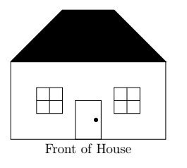
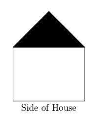
Solution
If we divide the side view of the house down the middle, we find that the roof line forms the hypotenuse of a right triangle with legs of length 6 feet and 12 feet. The angle of inclination \(\theta\) satisfies: \[\tan(\theta) = \frac{6}{12} = \frac{1}{2}\] Since \(\theta\) is an acute angle, we use the arctangent function: \[\theta = \arctan\!\left(\frac{1}{2}\right) \approx 26.56^{\circ}\]
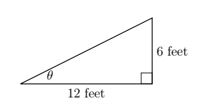